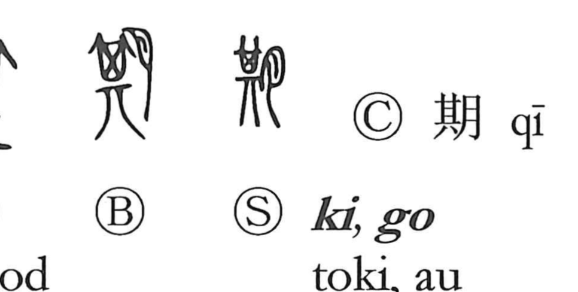

期

Kun: | On: ki, go
period ・ term ・ fixed date ・ to meet at an appointed time
Explanation
期 combines 月 with 其 as its phonetic. 其 originally represents a near-square winnowing basket and can have associations with a fixed position, interval, or division. 月 places the word within the vocabulary of measured time.
期 names a definite period, including the completion of a cycle. A traditional explanation also connects it with the coming together of the sun and moon, making calendrical recurrence one way of understanding the meeting sense.
An agreed time becomes an appointment: to fix a date, promise to meet, or expect an event at a stated time. The measured span reaches its appointed completion.